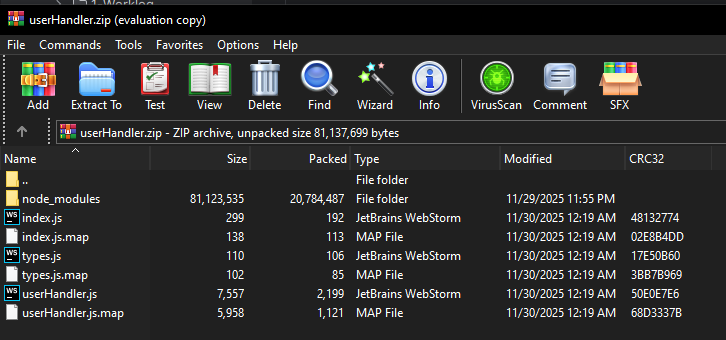
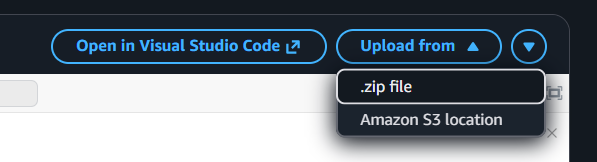
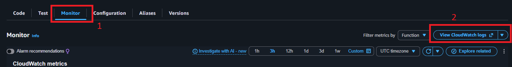

Lambda Functions Development
Overview
In this section, you’ll create AWS Lambda functions that serve as the business logic layer of your serverless backend. These functions will handle API requests, retrieve database credentials from Secrets Manager, interact with your RDS database, and return responses to API Gateway.
What you’ll accomplish:
- Understand Lambda function architecture and execution
- Develop Lambda functions for CRUD operations
- Connect Lambda to RDS PostgreSQL database
- Retrieve credentials securely from Secrets Manager
- Configure VPC settings for database access
- Package and deploy Lambda functions with dependencies
- Test Lambda functions directly
- Set up CloudWatch Logs for debugging
- Initialize database schema via Lambda
Estimated time: 60-75 minutes
Lambda Function Architecture
What We’ll Build
API Gateway
↓
Lambda Functions (in VPC)
├── initDB - Initialize database schema
├── createUser - Create new user
├── getUsers - List all users
├── createTask - Create new task
├── getTasks - Get user's tasks
├── updateTask - Update task
└── deleteTask - Delete task
↓
VPC Endpoint (Secrets Manager)
↓
Secrets Manager (get DB credentials)
↓
RDS PostgreSQL (execute queries)
Costs Considerations
Free-tier:
- 1 million free requests per month
- 400,000 GB-seconds of compute time per month
- Applies to both x86 and Graviton2 Lambda functions
- 100 GiB of HTTP response streaming per month
- The first 6 MB per request is always free
Paid-tier
- Even paid tier cost is minimal for our workshop
- Overall: <$1 (clean up immediately after finish workshop)
Step 1: Prepare Lambda Development Environment (optional)
In this step, you’ll set up a local development environment for building and packaging your Lambda function. However, this step is optional. If you prefer not to set up the environment manually, you can skip this step and download source code below. You can download source code for this part here:
- Github repository: https://github.com/Icyretsz/fcj-workshop-serverless-backend-ver1
- Only the zip file for lambda: https://fcj-workshop-files.s3.ap-southeast-1.amazonaws.com/userHandler.zip
1.1 View Project Directory
The source code is provided in the above git repository
The project structure:
fcj-workshop-serverless-backend-ver1
└── backend/
└── src/
└── userHandler.ts
└── types.ts
├── package.json
├── tsconfig.json
You can choose to organize your Lambda functions in different ways. In production, it is recommended to create separate Lambda functions for each user operation (CREATE, READ, UPDATE, DELETE) to improve maintainability, scalability, and security.
However, for the sake of simplicity in this workshop, we will place all user-related operations into a single Lambda function (userHandler.js).
The userHandler.ts
Key features of this handler:
- DB Initialization: creates users table and insert mock data automatically if it doesn’t exist.
- TypeScript types: uses your User interface and ApiResponse
. - Secrets Manager: retrieves database credentials at runtime.
- No connection pool: safe for workshops, simple enough.
- This Lambda function handles CRUD operations for users in a PostgreSQL database. It’s designed to work with API Gateway Lambda Proxy Integration, which provides a specific event structure and expects a specific response format.
Supported operations:
GET /users- Get all usersGET /users/{id}- Get single userPOST /users- Create new userPUT /users/{id}- Update userDELETE /users/{id}- Delete user
You can modify it as you like. When you are ready, move on to next steps to build and deploy our source code to Lambda
Step 2: Build Lambda Deployment Package
2.1 Install dependencies
From root folder, run
npm install
2.1 Build TypeScript Code
Build
npm run build
This creates dist folder in root directory
Now find node_modules folder then copy it to
dist folder
When complete, select all files in dist folder, compress them to zip and name it userHandler

Confirm contents of userHandler.zip

Step 3: Deploy Lambda Functions
Now we’ll create Lambda functions in AWS
3.1 Navigate to Lambda console
- Navigate to Lambda console
- Click Create function

3.2 Create Lambda function
- Function options:
- Select Author from scratch
- Basic information:
- Function name:
workshop-lambda-sm-rds - Runtime: Nodejs 24.x
- Architecture: x86_64
- Expand Change default execution role
- Select Use an existing role
- Select
workshop-lamda-secretsmng-role

- Advanced settings:
- Expand Advanced settings
- Check Enable VPC
VPC:
- Select
workshop-backend-vpc
Subnets:
- Select
workshop-private-subnet-1(10.0.1.0/24)
Security groups:
- Select
workshop-lambda-sg

- Click Create function
- Wait a few minutes for the system to create the Lambda function
- Create successful

3.3 Upload Deployment Package
- In the function page, in Code tab
- Click Upload from dropdown
- Select .zip file

- Click Upload
- Select
/fcj-serverless-workshop/backend/userHandler.zip - Click Save

- Lambda will start importing our source code (userHandler.zip)
- The result: you will see the source code files in the left sidebar

3.4 Configure environment variables
- Go to the Configuration tab
- On the left sidebar, click Environment variables
- Click Edit

- On the next screen, click Add environment variable
- Add the following variables:
- RDS-HOST: your RDS endpoint
- DB_NAME: your RDS database name
- SECRET_NAME: the secret name of the RDS-managed secret (refer to 5.2.4)
- REGION: your current AWS region

- Go back to Code tab, click Deploy

3.5 Test Lambda function
Now let’s test the Lambda function. We will test the get all users route
- In the Code tab of your Lambda function, click the Test button or Create new test event on the left sidebar
- A drawer on the right will appear
- Configure the test event:
- Event name:
test-get-users - Event JSON:
- Event name:
{
"httpMethod": "GET",
"pathParameters": null,
"body": null
}
- Click Save

- You will see your new test event in the left sidebar, hover on it and then click the play button to start the test

- If everything goes well, you will see the response with status 200 and a body contains our users

Step 4: Monitor Lambda with CloudWatch Logs
4.1 View CloudWatch Logs
- In Lambda console, click Monitor tab
- Click View CloudWatch logs

- Click on the latest Log stream

4.2 Analyze Log Entries
You should see detailed logs for each invocation:
2024-11-29T10:00:00.000Z INFO [users-handler] process start.
2024-11-29T10:00:00.100Z INFO Failed to get secret: Error: Could not retrieve secret
2024-11-29T10:00:00.150Z INFO Connected to RDS PostgreSQL successfully.
2024-11-29T10:00:00.200Z INFO Inserting demo users...
2024-11-29T10:00:00.250Z INFO Demo users inserted.
2024-11-29T10:00:00.300Z INFO [users-handler] process end.
Key things to observe:
- Successful database connection
- Table initialization
- Demo data insertion (first run only)
- Request method and path
- Query execution and results
4.3 Understanding Log Output
Successful Create User:
START RequestId: abc-123-def
[INFO] [users-handler] process start.
[INFO] Connected to RDS PostgreSQL successfully.
[INFO] Demo users inserted.
END RequestId: abc-123-def
REPORT RequestId: abc-123-def Duration: 1250.34 ms Billed Duration: 1251 ms Memory Size: 512 MB Max Memory Used: 128 MB Init Duration: 2345.67 ms
What each metric means:
- Duration: Actual execution time (1250.34 ms)
- Billed Duration: Rounded up time you’re charged for (1251 ms)
- Memory Size: Allocated memory (512 MB)
- Max Memory Used: Peak memory usage (128 MB)
- Init Duration: Cold start initialization time (2345.67 ms, first invocation only)
Error Example:
START RequestId: xyz-789-abc
[INFO] [users-handler] process start.
[ERROR] Failed to get secret: ResourceNotFoundException: Secret not found
[ERROR] RDS connection failed: Error: Connection timeout
[INFO] [users-handler] process end.
END RequestId: xyz-789-abc
REPORT RequestId: xyz-789-abc Duration: 5000.12 ms Billed Duration: 5001 ms Memory Size: 512 MB Max Memory Used: 95 MB
4.4 Filter Logs by Pattern
CloudWatch Logs Insights allows you to query logs with SQL-like syntax.
- In CloudWatch Logs, click Logs Insights in left navigation
- Select your log group:
/aws/lambda/workshop-lambda-sm-rds - Enter a query
- Click Run query
Example queries:
Find all errors:
fields @timestamp, @message
| filter @message like /ERROR/
| sort @timestamp desc
| limit 20
Find slow requests (> 2 seconds):
fields @timestamp, @duration
| filter @type = "REPORT"
| filter @duration > 2000
| sort @duration desc
| limit 20
Count requests by HTTP method:
fields @timestamp, @message
| filter @message like /httpMethod/
| parse @message '"httpMethod":"*"' as method
| stats count() by method
Find database connection errors:
fields @timestamp, @message
| filter @message like /RDS connection failed/
| sort @timestamp desc
| limit 20
Get average execution time:
fields @timestamp, @duration
| filter @type = "REPORT"
| stats avg(@duration) as avg_duration, max(@duration) as max_duration, min(@duration) as min_duration
Summary
Congratulations! You’ve successfully:
- Cloned and explored the TypeScript Lambda project
- Built and packaged the Lambda deployment
- Deployed Lambda function to AWS
- Configured VPC, security groups, and environment variables
- Tested CRUD operations
- Set up CloudWatch monitoring and logging
What You’ve Built
Your Lambda function now provides:
- Complete CRUD API for user management
- Database connectivity with automatic initialization
- Secure credentials via Secrets Manager
- VPC isolation for security
- Comprehensive logging for debugging
- Performance monitoring via CloudWatch
- Type-safe code with TypeScript
Architecture So Far
Client Request
↓
API Gateway (to be created in Part 5)
↓
Lambda Function (workshop-userHandler)
├→ VPC Endpoint → Secrets Manager → Get DB Credentials
└→ VPC Private Subnet → RDS PostgreSQL → Execute Queries
↓
CloudWatch Logs (monitoring & debugging)
Next Steps
Proceed to Part 5: API Gateway Setup to create REST API endpoints that will trigger your Lambda function and expose it to the internet.
Ready to continue? Your Lambda function is now fully functional and ready to be exposed via API Gateway! 🚀